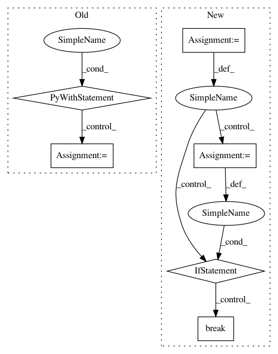

f2073333b710a340403843763ba60eb1e6699916,examples/data_process/tutorial_tfrecord2.py,,,#,81
Before Change
print("img_batch : %s" % img_batch.shape)
print("label_batch : %s" % label_batch.shape)
// init = tf.global_variables_initializer()
with tf.Session() as sess:
// sess.run(init)
tl.layers.initialize_global_variables(sess)
coord = tf.train.Coordinator()
threads = tf.train.start_queue_runners(sess=sess, coord=coord)
for i in range(3): // number of mini-batch (step)
print("Step %d" % i)
val, l = sess.run([img_batch, label_batch])
print(val.shape, l)
tl.visualize.images2d(val, second=1, saveable=False, name="batch" + str(i), dtype=np.uint8, fig_idx=2020121)
tl.vis.save_images(val, [2, 2], "_batch_%d.png" % i)
coord.request_stop()
coord.join(threads)
sess.close()
After Change
print("label_batch : %s" % label_batch.shape)
i = 0
for img_batch, label_batch in read_and_decode("train.cifar10"):
tl.visualize.images2d(img_batch, second=1, saveable=False, name="batch" + str(i), dtype=np.uint8, fig_idx=2020121)
i += 1
if i >= 3:
break
In pattern: SUPERPATTERN
Frequency: 3
Non-data size: 6
Instances
Project Name: tensorlayer/tensorlayer
Commit Name: f2073333b710a340403843763ba60eb1e6699916
Time: 2019-04-11
Author: rundi_wu@pku.edu.cn
File Name: examples/data_process/tutorial_tfrecord2.py
Class Name:
Method Name:
Project Name: pantsbuild/pants
Commit Name: 0f80c70a2bdaffbf4b1797aea481a62641701e93
Time: 2018-10-14
Author: benjyw@gmail.com
File Name: src/python/pants/releases/reversion.py
Class Name:
Method Name: reversion
Project Name: apache/incubator-mxnet
Commit Name: 66ee118a455c5e267566f0e3fdc482985f803df0
Time: 2020-04-03
Author: lausen@amazon.com
File Name: ci/build_windows.py
Class Name:
Method Name: windows_build